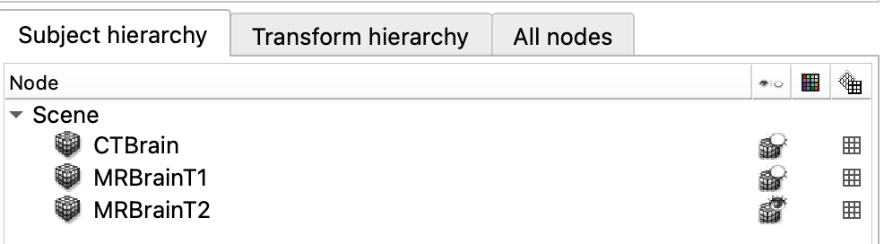
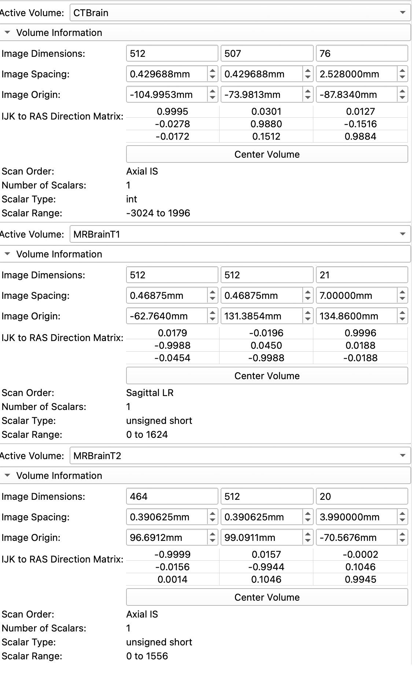
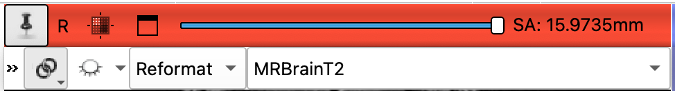
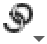
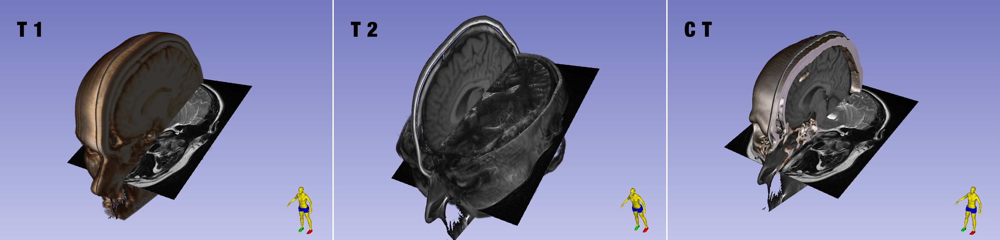

CT MRI
CT VS MRI
In this exercise, we load a dataset that contains a CT and two MRI volumes, all aligned with each other
Sample Data
Load the "CT-MR Brain" dataset
Review the Data
Use the Data module to review the loaded datasets: 

notice that the default is to hide the first two volumes and display MRBrainT2 (only row with an open eye icon)
Volume Information Exploration
- Open the
VolumesModules and review the Information - Select each volume in the Active Volume Menu and then examine the:
- Image Dimensions and Image Spacing
- Scalar Type
- Scalar Range

Which is the largest volume (Has the Largest Dimensions)
- The CT volume has the most Z-slices and the most voxels: nearly 20 million voxels (512 X 507 X 76).
- The MR volumes only have roughly 5 million voxels.
Which volume has the smallest voxels?
- CT voxels have the smallest XY and Z dimensions in the Image Spacing Row
- The size of the CT voxels are: \(0.43 * 0.43 * 2.5 = 0.46 mm^3\)
- The size of MR1 voxels are: \(0.47 * 0.47 * 7 = 1.55 mm^3\)
- The size of MR2 voxels are: \(0.39 * 0.39 * 4 = 0.61 mm^3\)
Which volume has the widest dynamic range?
The CT volume ranges from -3024 to 1996, so that's widest range. Notice how CT volumes have negative values, which MR volumes do not
Display Volumes in the viewers
- Display each volume in the Viewers and scrub through the slices
- Change the displayed volume by:
- Clicking on the push-pin icon in one of the viewers
- Clicking on the Chain icon to close the chain link
- Changing the listed volume

As you scrub through each volume, what differences do you notice right away?
- Which volume has an obvious cylindrical dataset?
- Which volume has the highest resolution the Sagittal Plane?
- Which volume(s) has the highest resolution in the Axial Plane?
- Which Volume was captured at an angle oblique to the Inferior-Superior Axis?
Maximize viewer
Remember For each viewer, you can expand the view by clicking on the "Maximize View" icon ( ) or double-clicking on the image itself. To restore the full-layout view, click on the "Restore Layout" icon ().
) or double-clicking on the image itself. To restore the full-layout view, click on the "Restore Layout" icon ().
Compare Slice Views
We have only one high resolution view for the each of MR volumes, so let's display those volumes in separate viewers. Click on the push-pin icon and set the Chain-Link icon to unlinked () so the viewers are not synchronized. Set the viewers as follows:
- Red Viewer: MRBrainT2.
- Green Viewer: to CTBrain.
- Yellow viewer: to MRBrainT1.
Be sure to fit all the volumes to the Window:  . You should see the following in the viewers:
. You should see the following in the viewers:

Notice how the bottom of the T1 volume is at an angle. This is because the volume has been aligned (registered) to the CT volume
- In which volume(s) can you see the white and gray matter most clearly?
- In which volume is the skull the brightest?
In the MR volumes
- Compare the colors of the white vs gray matter
- Compare the MR volumes to the CT volumes
- What Structures can you identify?
In the T2 Volume, find:
- The uncus
- The basal ganglia.
- The thalamus
- The Cochlea? (Look for the shrek ears on slice -23.9265mm)
In the T1 Volume, find:
- Corpus Callosum
- Fornix
- Cerebral Aqueduct
- Thalamus
- 4th ventricle
- Pituitary Gland
In the CT Volume, find:
- The pineal gland. The pineal gland is often calcified. Look for a small white dot.
- A putative meningioma (calcified falcine tumor) in the forebrain?
Sync the CTBrain and T1 slices to the tumor location.
- Can you see evidence of the tumor in the T1 scan?
Overlay volumes
We can compare the CT to MR scans by overlaying the volumes. Switch to the View Controllers module and set up the viewer volumes as follows:

Only Change the Red and Yellow slice controllers. Set the overlay transparency to 0.70
You should now see the following in the viewers:

Adjust the transparencies of the overlays as you review the slices
- Review the CT to determine the extent of the skull. Notice the Dura mater is difficult to see in the CT scan, but is clearly visible in the MR scans.
- For the CT/T2 overlay notice the intensity of the ventricles and the skull as you change the transparencies from CT to MR
- For the CT/T1 overlay, scrub to the location of the falcine tumor and observe the transition between CT to MR
Add Slices to the 3D view
Add the T1 and T2 slices to the 3D view by clicking on the respective slice viewer pushpins and toggling on the eye icon.

3D view of the MR volumes. Notice how the volumes were captured at angles to each other.
To remove the edges of the slices in the 3D view, switch to the Volume Module and:
- Select each MR Volume in the
Volumepop-menu - Under the Display tab, set the
Thresholdas indicated in the table below:
| Volume | Lower Threshold |
|---|---|
| MRT1 | 70 |
| MRT2 | 30 |
Volume Render the Skull
Switch to the Volume Rendering module. Render and review each volume by selecting the volume in the Volume pop-up menu and toggling the eye icon. Create the following three renders (sequentially, not at the same time).

3D renders of the CT-MR volumes.
Crop the rendered volume to get the views shown in T1 and CT.
- Be sure to remove the left halves of the volumes.
- Add the MR slices to the 3D viewer (Red and Yellow viewers) for all renders.
- Remove the edges of the MR slices
For the T1 render
- Select the MR-default preset
- Notice how thick the slices are in T1 render in the 3D viewer
- This gives you an indication of the resolution of the volume.
For the CT render:
- Slide the "Shift" slider back and forth to reveal the head restraint. Does the patient have straight or curly hair?
- Select the CT-AAA preset to reveal the skull
- Find the Intracranial sinus
- Find the falcine tumor. If not visible, adjust the crop ROI.